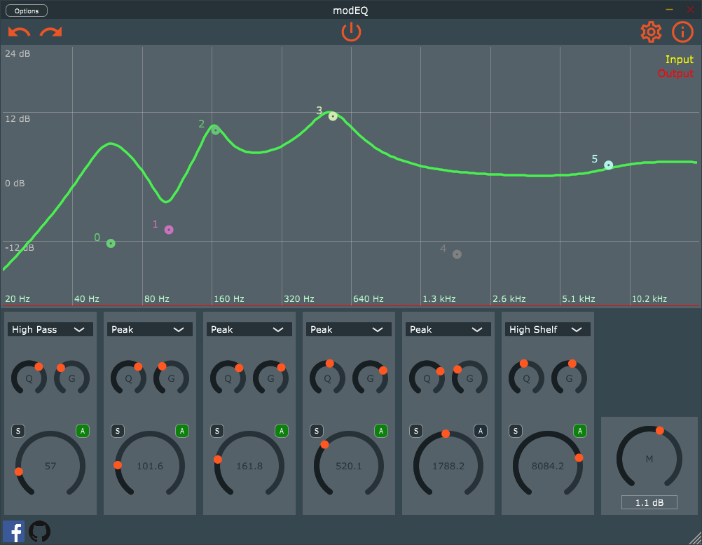

EQ audio effects plugin with modulation. Used as a playground to learn the JUCE framework and modern C++.
**Documentation**
Status
Screenshot

Features
- 6 Band EQ
- High Pass
- Low Shelf
- Band Pass
- Peak
- High Shelf
- Low Pass
- Input & output analyzer
- Solo / bypass each band
- Control bands from Sliders or Frequency plot
- Drag to set gain & frequency
- Right click to select filter type
- Double click to toggle bypass
- Scroll wheel selects Q
What doesn't work (yet)
- Modulation (I know it's in the name...)
- Bypass button
Build
```sh git clone –recursive https://github.com/tobanteAudio/modEQ.git ```
Windows
- Download & Install Visual Studio 2017
- Build Projucer from JUCE
- Open & Resave modEQ.jucer with Projucer
- Open in Visual Studio 2017 and select "Release"
macOS
- Download & Install Xcode
- Build Projucer from JUCE
- Open & Resave modEQ.jucer with Projucer
- Open in Xcode and select "Release"
Linux
- Install dependencies
- Build Projucer from JUCE
- Resave modEQ.jucer with Projucer
```sh cd $PROJECT_ROOT/Build/LinuxMakefile make config=Release -j8 cp build/modEQ.so ~/.vst ```
ToDo
- Modulation
- Reactivate
- Fix drawing of LFO
- Add waveforms
Acknowledgment
The project started with the code from Daniel Walz's github repository ffAudio/Frequalizer, which was released under the BSD 3-Clause license.
 1.8.6
1.8.6